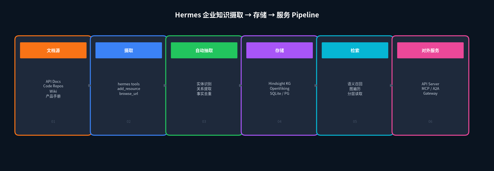
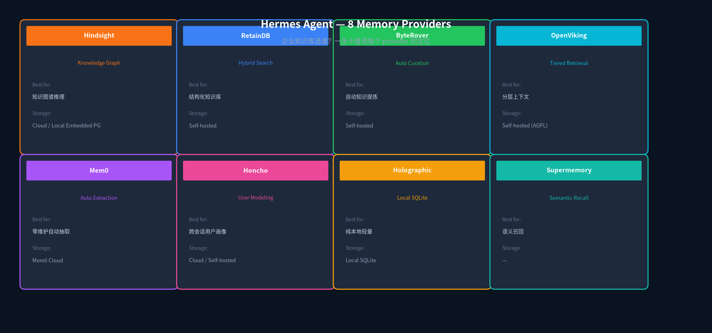
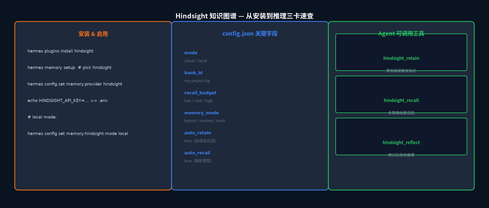
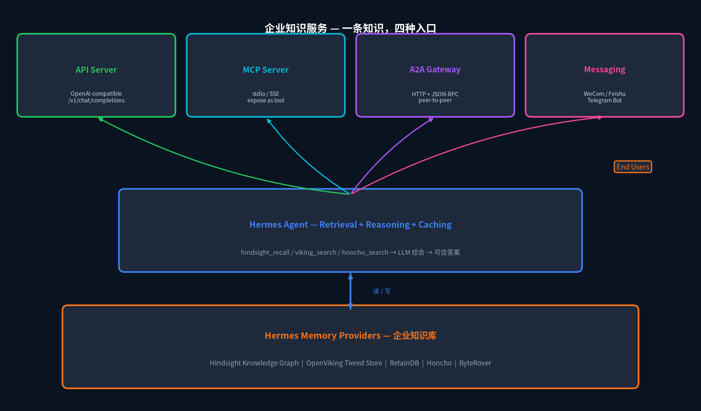

HERMES AGENT · ENTERPRISE KB
Hermes Agent 构建企业知识库
选 Provider · 摄取 · 对外知识服务
企业里最宝贵的知识不是存在某个人脑子里，也不是散在 Confluence 的某个角落，而是每个人 想问就能问到、问一次就问透 的那个系统。
API 接口文档在哪？那个支付功能是三年前哪个同事改的？上周新上线的数据管道有哪些节点？这些问题每天都被反复问。如果每个人都要去翻一遍 wiki、翻 git log、翻 Slack 搜索，这公司的"知识获取成本"就一直在烧钱。
Hermes Agent 的 memory provider 插件系统，就是把企业知识库这件事做成一个可插拔的能力层。不是从零搭 RAG 系统，而是选一个合适的 provider，让 Hermes 帮你完成三件事：摄取 → 存储 → 对外服务。

图 1 · 从原始文档到对外服务的六步 Pipeline
1
先挑哪个 Memory Provider
Hermes 目前有 8 个外部 memory provider 插件可用。同一时间只能激活一个 —— 内置的 MEMORY.md 和 USER.md 始终并行工作，外部 provider 是叠加层。选哪个看你想解决什么问题：

图 2 · 8 个 Provider 一张卡对比
重点说几个最适合企业场景的。
Hindsight —— 知识图谱 + 实体关系提取。这是 Hermes 插件目录里最像"企业大脑"的那个。自动把对话里的实体和关系存成图，hindsight_reflect 工具能跨多条记忆做综合推理 —— 这是别的 provider 没有的能力。支持 cloud 或 local embedded PostgreSQL，免费自建。
OpenViking —— 字节 Volcengine 出的开源 AGPL 方案。最大亮点是 分层上下文读取：L0（~100 tokens，摘要）→ L1（~2k tokens，概述）→ L2（全文）。Hermes 有 viking:// URI scheme 可以像文件系统一样浏览知识库。对员工自助浏览特别友好。
ByteRover —— 自动知识提炼 + 预压缩。跑在 Hermes 上，每次对话结束自动 curate，支持 Pre-Compression Flush。适合对话量大、想让 agent 自动从闲聊中提炼知识的团队。
Honcho —— 跨会话用户建模。两层 context 注入（session 基础层 + dialectic 补充层），带 peer card（用户画像卡）。特别适合多 agent 协作系统，每个 agent 看的是同一个用户的不同切面。
Holographic —— 纯本地 SQLite + FTS5 全文搜索 + trust scoring。零外部依赖，数据全在自己电脑上。适合个人使用或对数据出境零容忍的场景。
2
启用一个 Provider 到底发生了什么
一条命令：hermes memory setup。交互式选好 provider 之后，Hermes 自动完成五件事 —— 不是装插件就完事了：
① 把 provider 的 context 注入 system prompt（让 agent "知道"这个 provider 里有什么）
② 每轮对话前 后台预取 相关记忆（non-blocking，不卡）
③ 每轮回复后自动同步 turns 到 provider
④ session 结束时自动抽取记忆（支持的 provider）
⑤ 镜像内置 MEMORY.md / USER.md 的写入到外部 provider
也就是说，你启用一个 provider 之后，Hermes 不是"多了一个工具"，而是 整个运行时都变了 —— agent 每轮思考之前先去问一下 provider，每轮说完之后再把新内容存进去。而且这个过程对 agent 本身是透明的，它不会知道"我正在用 Hindsight"，它只知道"我知道这些事"。
3
把知识"喂"进去：摄取路径
启用完 provider 是空的 —— 你得把企业现有知识源喂进去。Hermes 给了几条路径：
对话自动摄取 —— 最省心的方式。只要 auto_retain: true（Hindsight 默认就是 true），每次对话结束 Hermes 自动把 turns 存进 provider，连同工具调用记录。你只要跟 agent 聊天，它就一直在学习。
显式调用摄取工具 —— 每个 provider 都有显式的 store 工具。Hindsight 是 hindsight_retain(content, tags=...)，OpenViking 是 viking_remember(fact)。可以手动指定 tags 让后续检索更精准。
批量文档导入 —— OpenViking 有 viking_add_resource(url) 可以直接把一个 URL 或一份文档整个 ingest 进去，自动抽成结构化条目。适合一次性把旧 wiki 迁移过去。
MCP Server 桥接 —— 如果你的企业知识库已经跑在 Neo4j / PostgreSQL / Elasticsearch 上了，不用推倒重来。Hermes 支持 MCP（Model Context Protocol），可以把现有数据库作为 MCP server 接进来，Hermes 直接调它们的原生查询工具。这是成本最低的集成方式。
4
Hindsight 知识图谱配置实例
拿 Hindsight 具体走一遍。它是最适合做企业知识图谱的 provider，支持 cloud 和 local embedded 两种模式。
# 第一步：安装插件
hermes plugins install hindsight
# 第二步：交互式配置（或手动 config）
hermes memory setup # 选 hindsight
hermes config set memory.provider hindsight
# Cloud 模式（推荐起步用）
echo "HINDSIGHT_API_KEY=your-key-from-ui.hindsight.vectorize.io" >> ~/.hermes/.env
# 或 Local 模式（自托管 PostgreSQL + LLM）
hermes config set memory.hindsight.mode local
配置文件在 ~/.hermes/hindsight/config.json。关键字段：
{
"mode": "cloud",
"bank_id": "payments-team-kg",
"recall_budget": "high",
"memory_mode": "hybrid",
"auto_retain": true,
"auto_recall": true,
"retain_tags": ["company-knowledge", "payments"]
}
重点解释三个开关：
memory_mode —— hybrid 是默认（自动注入 + 工具都开）。context 只自动注入不提供工具，tools 只提供工具不自动注入。
recall_budget —— low / mid / high。high 召回 thoroughness 最高，但也最贵（API 调用更多）。团队规模大的时候建议 low 起步，不够再加。
bank_id —— 每个项目一个独立的知识图谱。多团队共用一个 Hermes 时，bank_id 是隔离单位。

图 3 · Hindsight 安装 → 配置 → 工具三卡速查
5
四种方式对外暴露知识服务
知识库不是建完就完了，得让员工用起来。Hermes 给了四种暴露路径，对应不同的使用场景：

图 4 · 企业知识服务四层架构
① Messaging Gateway（最推荐起步） —— hermes gateway 把 Hermes 挂到企业微信、飞书、Slack、Telegram 上。员工直接在群里或私聊里 @Bot 问问题，Bot 用已经建好的知识库回答。零学习成本，最容易落地。这也是上一期推文讲的那条路。
② API Server（程序化调用） —— Hermes 内置 OpenAI 兼容的 API Server，暴露 /v1/chat/completions 和 /v1/runs SSE streaming 接口。你的前端可以直接把 Hermes 当后端 —— 自己做个"知识问答"表单，提交到这个 endpoint，拿到答案就渲染。
③ MCP Server（给其他 AI 工具用） —— hermes mcp serve 把 Hermes 的工具（包括 memory provider 的 search/recall 工具）暴露成 MCP server。任何支持 MCP 的客户端（Claude Desktop、Cursor、VS Code 扩展）都能调 —— 员工不用换工具，在自己熟悉的编辑器里就能让 AI 查你们的知识库。
④ A2A Gateway（跨 Agent 协作） —— 上一期推文讲的 A2A 协议。把 Hermes gateway 的 inbound A2A 平台开起来（port 9900），你们团队的其他 Agent（比如 LangChain、CrewAI、Google ADK）都可以通过 A2A v1.0 JSON-RPC 来查这个知识库。Agent Card 自动描述 Hermes 有哪些 memory search 能力。
最狠的一点：这四种路径共享同一份知识库、同一个 Hermes Agent、同一套 memory provider。你不需要给每个入口单独配一套 RAG pipeline —— 员工在企业微信问的、前端 API 查的、Cursor 里 AI 要的、另一个 agent 调的，全都走同一个 Hermes 实例。
6
一个实际的企业场景
假设你是支付团队，准备这么搭：
① 选 Hindsight，开 cloud 模式，bank_id 叫 payments-team-kg，recall_budget 先 mid。
② 用 viking_add_resource 把旧 Confluence 里的支付接口文档、Wiki 里的支付流程说明、Git 仓库的 README 一次性 ingest。
③ 每天让 Hermes gateway 挂在企业微信的支付团队群里。新成员 onboarding 直接 @Bot 问"支付渠道的对账流程"，Bot 从 Hindsight 知识图谱里拉出来（关联到了那个三年前改它的同事 —— Hermes 记住了）。
④ 另一个团队的同事用 Cursor 写代码，遇到一个支付 SDK 参数不清楚的地方，Cursor 里的 AI 自动通过 MCP 调 Hermes 的 knowledge search —— 同一个 bank_id，同一个 Hermes，不同入口。
⑤ 月底了 Orchestrator Agent 要自动生成支付系统周报，它通过 A2A 调这个 Hermes gateway，拉出过去一个月所有支付相关的对话和文档，自动汇总成结构化报告。
整个链路里只有一个 Hermes 实例，一个 Hindsight bank_id，一个 knowledge graph。所有人和所有 agent 走不同入口，但 查的是同一份知识。
7
小结 & 选型建议
最后给一个建议顺序：
起步阶段 —— 选 Hindsight cloud 或 OpenViking 自建。两者都提供基础的语义搜索 + 实体关系。先把一个小组的知识源喂进去，跑通 3-4 种日常问答。
扩展阶段 —— 开 Messaging Gateway（企业微信 / 飞书）+ API Server 双出口。前者服务日常查询，后者服务前端和内部工具。
成熟阶段 —— 接 A2A Gateway 让其他 agent 来调，接 MCP Server 让 Cursor/Claude Desktop 的 AI 来查。考虑用 Honcho 做跨会话用户建模，或者用 ByteRover 的自动提炼降低手动喂知识的成本。
记住：Hermes 的 memory provider 是 可插拔 的。你今天用 Hindsight，明天想换成 OpenViking 或者接一个 Neo4j，只改 memory.provider 一行配置 —— Hermes 不会丢失它已经学到的对话模式和用户画像。真正要迁移的是知识库本身，而不是 Hermes 的运行时。
参考链接：